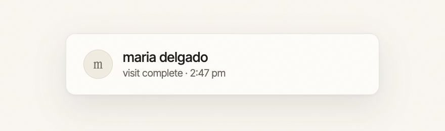
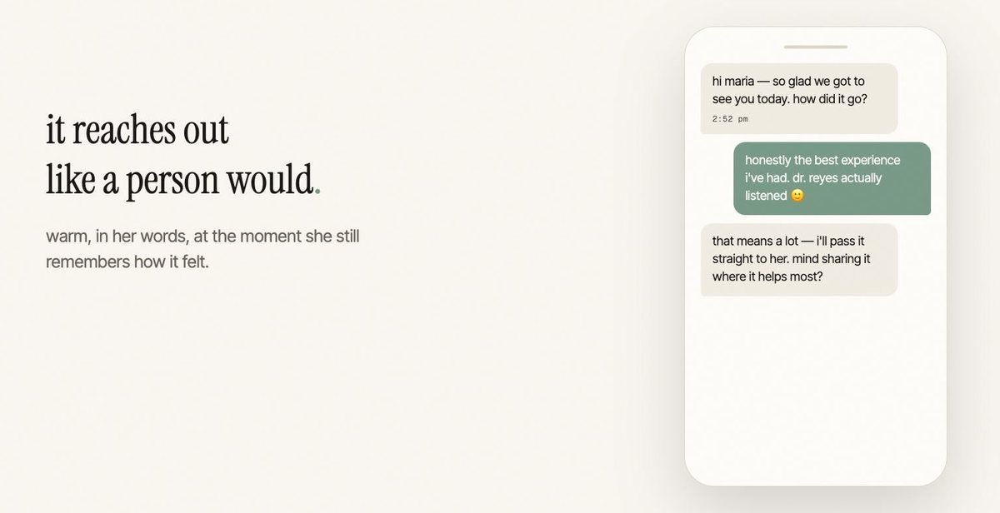
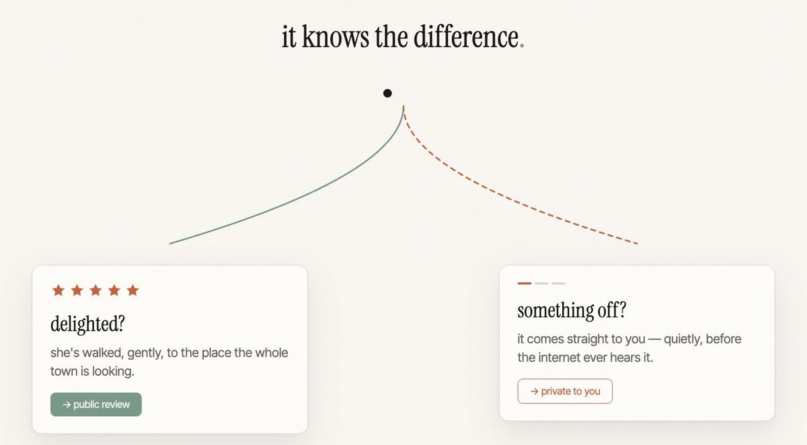
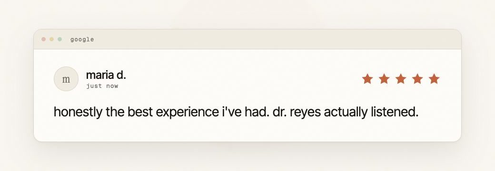

One patient, start to finish.
Follow Maria, an example patient, from the moment her visit ends to the moment her review appears on Google. Nobody at the front desk has to remember a thing.
Four steps, all handled for you
Applaud works from the patient list your practice already keeps, shared with us through a secure upload or sync. From there, every step below runs without taking time from your team.
-
Step 1
The visit ends
Maria finishes her appointment and heads home happy. This moment is easy to lose, because nobody has time to ask for a review while the next patient is waiting.

Maria's visit is marked complete at 2:47 pm. -
Step 2
A personal text goes out
Applaud sends Maria a warm, personal text that reads like it came from your office. It asks how her visit went, not for five stars.

The conversation reads like a person wrote it. -
Step 3
Happy patients are invited to Google
When a patient is delighted, Applaud invites them to share it on your Google Business Profile. When something felt off, their feedback comes straight to your team, so you can follow up and make it right.

Applaud knows the difference between a delighted patient and one who needs to hear from you. -
Step 4
The review posts
Maria's review lands on your profile in her own words. That is the only moment you are billed. If a request never turns into a posted review, it never shows up on your bill.

In her words, on your profile. Names and quotes on this page are illustrative.
What your team actually does
- Share your patient list once, through a secure upload or sync
- Sign a Business Associate Agreement (BAA) before any patient information changes hands
- Call back the patients who asked to hear from you
- Nothing else. Applaud handles the asking and the follow up
See it with your own patient list
Book a short demo and we will show you exactly what your patients would receive.